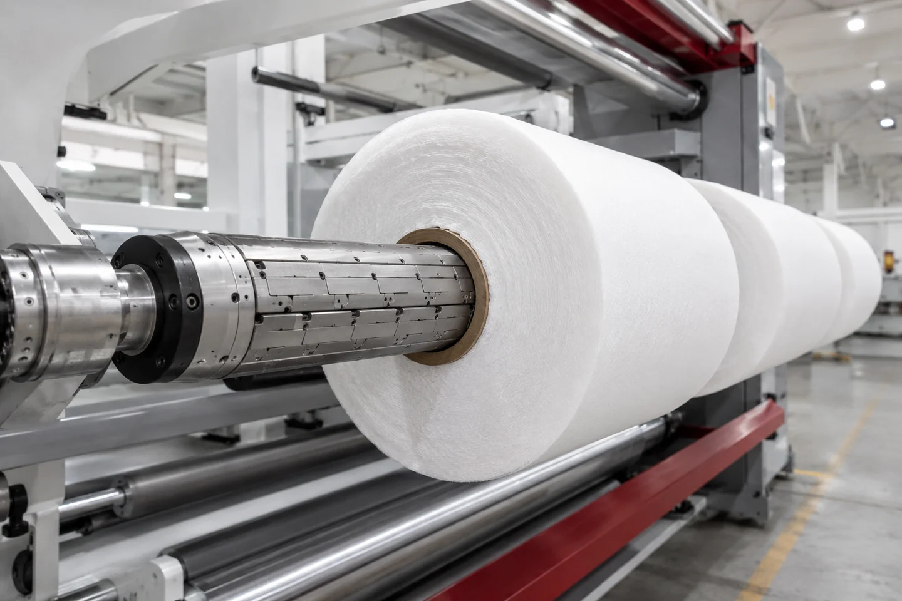
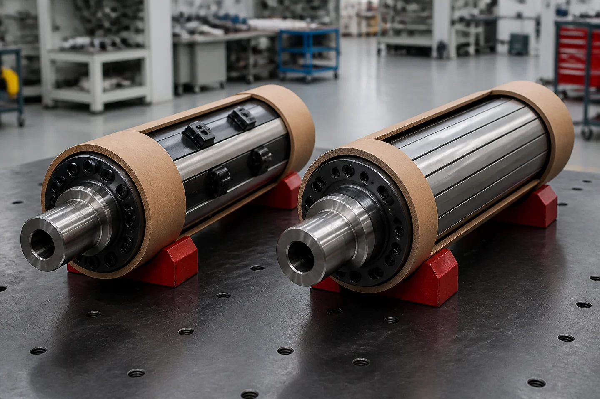

Published August 31, 2026 | By HDPTH Technical Editorial Team

What an air shaft does in a slitter rewinder
An air shaft is the expanding shaft inside a paper, film or nonwoven core that lets the rewind drive transfer rotation to the finished roll. In a core-grip slitter rewinder, it is both torque-transfer member and locating device: air moves an expansion mechanism, lugs or leaves grip the core ID, and the roll follows.
The mechanism creates several buyer questions. Contact must grip without crushing or cutting the core, while body and journals fit the rewind stand, bearings, safety chucks or coupling. Operators must handle and service it safely, and controls must use torque suited to the material and roll build. An air shaft is not an interchangeable tube added after design.
Manufacturers offer distinct shaft families. Maxcess/Tidland’s slitting and winding resources list lug, leaf, differential and chuck products with installation and maintenance literature. A differential rewind shaft is a separate choice for lane-to-lane slip and tension equalization; use the differential rewind shaft guide when that is the problem. Ask what the shaft must grip and release.
Start with the torque path and core fit
Write the load path in words
Before comparing lug and leaf quotations, write the load path as a short chain:
rewind drive or coupling → journal and shaft body → expanding lugs or leaves → core inside diameter → wound roll
Every arrow can introduce loss, slip, misalignment or damage. A motor rating does not prove torque reaches the web. Contact can slip with a contaminated or damaged core, or mark it under excessive pressure. A journal or safety chuck can limit the system. Ask the supplier to state each load-path assumption.
Define the actual core, not only its nominal ID
Send nominal core ID with measured minimum and maximum, ovality if known, wall construction, length, stiffness, surface and supplier tolerance. State whether cores are new, reused, dusty or dented, including the worst acceptable condition.
Inflation does not center a bowed or out-of-tolerance core. Expansion creates contact according to the shaft design and clearance: a loose core can move or slip, while a tight one may not accept the shaft or may be damaged during expansion. A production-core trial is more informative than a promise that air compensates for variation.
Core length and face coverage matter too. A shaft can fit the ID but have the wrong pattern for short or long cores, several lanes or mixed widths. Ask where contacts sit, whether spacers are required and how the core is positioned.
Separate fit from winding control
Core fit establishes grip; it does not replace tension, torque, diameter compensation, nip or guiding. For torque and web force, link to slitter rewinder rewind torque control. For roll-package planning, use the core-size and finished-roll-diameter guide. Require an interface drawing and separate measured values from targets.
Lug vs leaf air shafts: the buyer decision

The lug air shaft vs leaf air shaft question is about contact distribution and core behavior. Lugs are discrete expanding contacts; leaves present a broader face. Choose from core wall, tolerance, roll pattern, torque demand, face length and handling.
| Buyer concern | Lug-style air shaft | Leaf-style air shaft |
|---|---|---|
| Contact pattern | Discrete radial contacts; confirm spacing, count, contact length and local pressure with the supplier. | Broad contact along the leaf face; confirm expansion travel and coverage under the actual core. |
| Core question | Can the core wall and ID condition tolerate local contact without slip or deformation? | Does the broader contact suit a thin-wall or pressure-sensitive core without preventing release? |
| Design discussion | Lug geometry and position may be tailored to the core and lane layout. | Face length, leaf support and expansion along the shaft length need review. |
| FAT focus | Check engagement at every core, slip marks, local damage and release. | Check even engagement, core deformation, release and contact across the usable face. |
The comparison is a starting point, not a guarantee. Convertech’s continuous lug shaft information describes discrete lugs and an application-customized design. Treat that as positioning: ask which inputs drive the pattern and what FAT will demonstrate.
For leaf designs, Tidland’s Leaf Shaft product sheet describes broad radial contact along the leaf face for thin-wall core deformation concerns and single- or multiple-roll winding. Convertech’s leaf shaft page presents leaves expanding along the shaft length for thin-walled cores. These are reasons to investigate, not proof that every thin core requires one.
Do not turn labels into shortcuts: lug is not automatically for heavy rolls, and leaf is not automatically better. Ask for contact locations, core acceptance criteria and the response to an imperfect core.
The application data that controls shaft selection
Rewind air shaft selection needs data describing the material, roll and factory. A generic “slitter rewinder air shaft” request leaves assumptions hidden.
Material and roll data
Identify material family, construction, thickness or GSM, compressibility, friction, tack, dust and marking sensitivity. State whether it is nonwoven, paper, film, laminate or another substrate, and identify the hardest recipe. Material behavior affects winding torque and core contact.
Provide parent-roll width and diameter, finished-roll widths and diameter, mass, lane count, lane pattern and expected cores. Include narrowest and widest rolls, mixed widths and downstream limits on hardness, edge condition or removal force. Let the hardest recipe drive the review.
Provide core ID, wall material and thickness, length, tolerance, ovality, compression behavior and condition. Attach the core drawing, explain reuse and rejection damage, and state whether rolls are stored, transported or fed directly to another machine.
Machine and interface data
State target stable speed, acceleration and deceleration, winding method, torque-control signals, shaft orientation, usable face length and support method. Require journal, coupling or chuck, bearing, air-inlet, shaft-mass, lifting and clearance data, plus drawings and change parts before order.
Ask about the plant’s air system without copying a pressure value from another machine. The selected shaft manual should define inflation, filtration, regulation, isolation and service; confirm that the plant utility and hose route support it during production and maintenance.
As a scoped HDPTH reference, the nonwoven rewinding-machine manual presents a winder configuration with a 75–250 mm roll-core requirement. This is not a universal air-shaft range or a promise that every HDPTH machine covers those values. Confirm the exact core and shaft during engineering review. See HDPTH’s nonwoven rewinding machine information.
Handling and quality data
Describe how operators load cores, mount and inflate the shaft, install safety chucks, remove rolls and store it. State lifting aid, cleaning exposure, spare expectations and maintenance owner.
Define evidence: core fit, expansion and retraction, air leak, torque transfer, roll quality and release, plus dimensional and maintenance records. Request project-specific values and test methods for runout, concentricity, contact force or torque capacity; do not infer them from brochures.
Air integrity, inspection and maintainability
An air shaft is useful only when its expanding mechanism reaches and holds the intended state. Consider bladders, pistons, valves, hoses, swivels and seals together. The manual should control inflation, isolation and replacement.
Maxcess/Tidland’s PressureMax guidance connects correct bladder inflation and maintenance with torque transfer and associates loss of inflation or leaks with core slippage, web breaks, scrap and downtime. Treat this as manufacturer guidance, not a universal prediction. If needed, use only a manufacturer-approved simulated fault or diagnostic procedure under the agreed risk assessment; do not alter live pneumatic conditions.
Before a run, inspect the valve, gauge, hose, swivel, shaft surface and visible lugs or leaves. Check retraction and consistent expansion under the approved procedure; look for cuts, deformation, dust, corrosion, damaged threads or unusual wear. Keep it isolated and depressurized; use the risk assessment and shaft manual for energy isolation.
Write maintainability into the purchase specification. Ask for component and part lists, an exploded drawing, service manual, spares, inspection points and damaged-core removal. Confirm pressure visibility, leak response, part identification and maintenance traceability.
During FAT, record shaft condition before and after the runs. Check expansion, retraction, air holding, connection access, release and contact wear. If monitoring is proposed, ask what it detects, calibration and limits. It supports maintenance; it does not prove core quality, concentricity or a suitable recipe.
Operator handling, interfaces and safety review
The shaft must fit the operator’s workflow. Define bringing a core to the station, positioning it, engaging the journal or safety chuck, connecting air, expanding contacts, starting and releasing the roll. Show operator position and any tool or lifting aid. A shaft that works on a drawing can still create a poor changeover if awkward to align.
Request an interface drawing identifying body length, usable face, journals, bearings, coupling, chuck engagement, air connection, lifting points and guard clearances. Clarify whether it is cantilevered, double-journal, bored or flanged. Convertech’s leaf-shaft information illustrates why interface style belongs in the quotation.
Review guarding around rotating shafts, chucks, nip points and stored pneumatic energy. Check emergency-stop access, interlocks, restart, lockout, depressurization and recovery for a stuck core. The buyer’s safety team and builder must confirm destination requirements; this is not a certification claim.
For the architecture boundary, a conventional expanding rewind shaft is different from a shaftless unwind system that grips a parent roll at its ends. Use the shafted-versus-shaftless unwind comparison only when the question is parent-roll loading; it should not replace a rewind-shaft interface review.
HDPTH’s factory information describes assembly and commissioning support, custom-configuration communication and export packing workflows. These support a project conversation, not a universal protocol. Put shaft drawings, lifting method, safety checks, training scope and acceptance records into the contract.
RFQ and FAT checklist for an air shaft
Use this checklist and mark each item supplied, to be confirmed or not applicable.
RFQ package
- Material: family, construction, thickness or GSM, friction or tack, compressibility, dust and marking sensitivity.
- Parent roll: width, diameter, mass, core ID, wall construction and loading method.
- Finished rolls: width, diameter, mass, lane pattern, cores, mixed-width recipes and downstream limits.
- Core fit: nominal and measured ID, tolerance, ovality, length, wall condition, reuse, acceptable damage and drawing.
- Operating profile: target stable speed, acceleration, deceleration, winding method, product changes and hardest recipe.
- Shaft design: lug or leaf, contact locations, face length, expansion and retraction, journals, bearings, coupling or chuck, air inlet and mass.
- Factory handling: lifting points, hoist or trolley, access, storage, cleaning, changeover and station space.
- Utilities and documents: shaft-manual air requirements, control signals, general arrangement, maintenance manual, spares, risk information and destination rules.
HDPTH’s buyer information asks for material type, parent and finished widths, roll diameter, target speed, application industry and destination country. Its FAQ states that width, speed, knife system, winding method, control setup and auxiliary equipment can be discussed by project. Add the shaft data; these fields do not prove construction. See high-speed slitting machine information.
FAT package
- Agree test material and core condition, recipes, settings and acceptance criteria before FAT; record substitutions.
- Verify the drawing against the delivered shaft: identity, body and journal dimensions, air connection, contacts, lifting points and interfaces.
- Check loading, expansion, retraction and release with representative cores; inspect slip, marks, deformation, incomplete engagement and removal.
- Run startup, acceleration, steady winding, deceleration and stop. Record settings and inspect rolls against agreed criteria.
- Check air integrity before and after the run, including leak response, pressure indication and safe depressurization per the manufacturer.
- Test changeover and recovery for a stuck core, incomplete expansion, guard opening, emergency stop or interrupted utility.
- Review guarding, interlocks, access, lifting aids, training, maintenance access and spares.
- Issue a signed data pack with recipe, deviations, drawings, inspection records, manuals, spares and traceability.
The broader slitter rewinder FAT checklist can organize the test. HDPTH’s factory page describes assembly and commissioning support, but not a universal FAT protocol; the contract should state material, limits and evidence.
Send a project-ready inquiry
To discuss a configuration with HDPTH, send material, parent and finished roll data, core ID and condition, mass, target speed, winding method, lane pattern, handling constraints and destination country through the HDPTH inquiry form. Engineering review must confirm whether lug, leaf or another arrangement fits.
Frequently asked questions
What is an air shaft on a slitter rewinder?
An air shaft is an expanding shaft that grips a rewind core so drive rotation reaches the finished roll. Expansion may use lugs or leaves. Selection depends on core ID and condition, roll package, lane pattern, interface, air integrity, handling and the winding recipe. Inflation cannot correct a damaged or out-of-tolerance core, so include core inspection and representative-material FAT checks.
Should a buyer choose a lug or leaf air shaft?
Choose from core and application evidence, not a default preference. Lug shafts use discrete contacts; leaf shafts provide broader contact and may merit investigation for thin-wall or pressure-sensitive cores. Neither is always better or guarantees roll quality. Ask for contact layout, interface, air maintenance and FAT checks for the actual cores and lane pattern.
Is an air shaft the same as a differential rewind shaft?
No. A conventional air shaft expands lugs or leaves to grip a core and transfer torque. A differential rewind shaft is a separate architecture that lets individual slit rolls slip relative to a common shaft to manage lane differences. Do not assume an air shaft provides differential action; define the problem before comparing quotations.
What core data should be included in an air-shaft RFQ?
Include nominal and measured core ID, tolerance, ovality if known, wall material and thickness, length, stiffness, surface condition, reuse history and worst damage. Add core arrangement, finished-roll width and diameter, mass, lane pattern, target speed, winding method and downstream handling. Attach a core drawing. The supplier should confirm contact layout, expansion clearance, interface and trial method.
What should be checked during an air-shaft FAT?
Check the shaft against its drawing, then run representative material and cores through loading, expansion, winding, stopping and release. Record air integrity, expansion and retraction, settings, core condition, slip or marking and roll observations. Verify guarding, interlocks, lifting and maintenance access. Record substitutions and deviations, and retain the recipe and shaft manual.
```json
{
"@context": "https://schema.org",
"@type": "FAQPage",
"mainEntity": [
{
"@type": "Question",
"name": "What is an air shaft on a slitter rewinder?",
"acceptedAnswer": {
"@type": "Answer",
"text": "An air shaft is an expanding shaft that grips a rewind core so drive rotation reaches the finished roll. Expansion may use lugs or leaves. Selection depends on core ID and condition, roll package, lane pattern, interface, air integrity, handling and the winding recipe. Inflation cannot correct a damaged or out-of-tolerance core, so include core inspection and representative-material FAT checks."
}
},
{
"@type": "Question",
"name": "Should a buyer choose a lug or leaf air shaft?",
"acceptedAnswer": {
"@type": "Answer",
"text": "Choose from core and application evidence, not a default preference. Lug shafts use discrete contacts; leaf shafts provide broader contact and may merit investigation for thin-wall or pressure-sensitive cores. Neither is always better or guarantees roll quality. Ask for contact layout, interface, air maintenance and FAT checks for the actual cores and lane pattern."
}
},
{
"@type": "Question",
"name": "Is an air shaft the same as a differential rewind shaft?",
"acceptedAnswer": {
"@type": "Answer",
"text": "No. A conventional air shaft expands lugs or leaves to grip a core and transfer torque. A differential rewind shaft is a separate architecture that lets individual slit rolls slip relative to a common shaft to manage lane differences. Do not assume an air shaft provides differential action; define the problem before comparing quotations."
}
},
{
"@type": "Question",
"name": "What core data should be included in an air-shaft RFQ?",
"acceptedAnswer": {
"@type": "Answer",
"text": "Include nominal and measured core ID, tolerance, ovality if known, wall material and thickness, length, stiffness, surface condition, reuse history and worst damage. Add core arrangement, finished-roll width and diameter, mass, lane pattern, target speed, winding method and downstream handling. Attach a core drawing. The supplier should confirm contact layout, expansion clearance, interface and trial method."
}
},
{
"@type": "Question",
"name": "What should be checked during an air-shaft FAT?",
"acceptedAnswer": {
"@type": "Answer",
"text": "Check the shaft against its drawing, then run representative material and cores through loading, expansion, winding, stopping and release. Record air integrity, expansion and retraction, settings, core condition, slip or marking and roll observations. Verify guarding, interlocks, lifting and maintenance access. Record substitutions and deviations, and retain the recipe and shaft manual."
}
}
]
}
```
Source note: